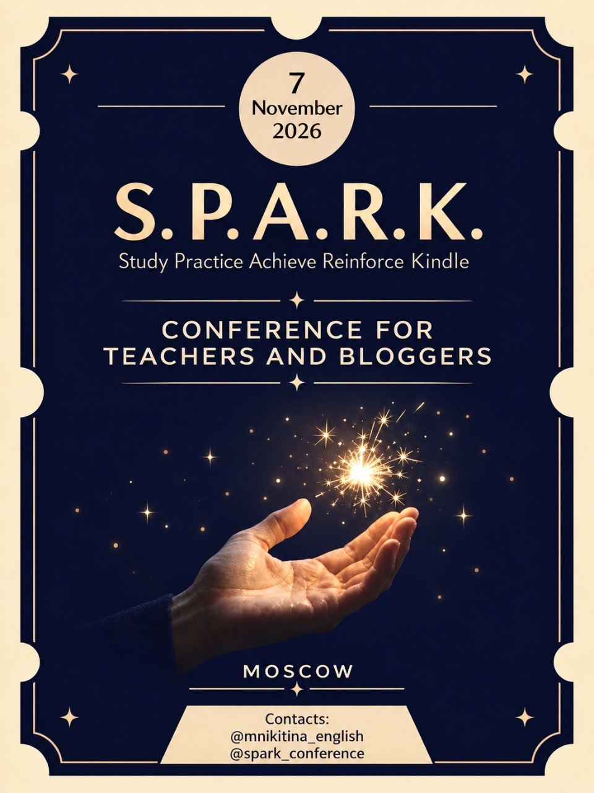
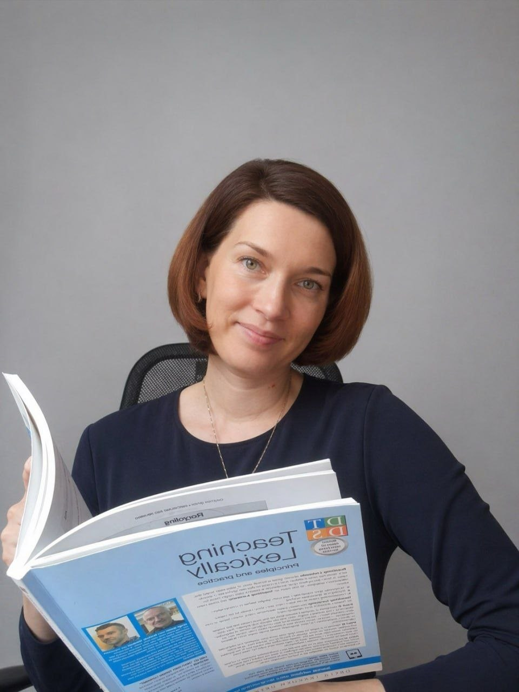
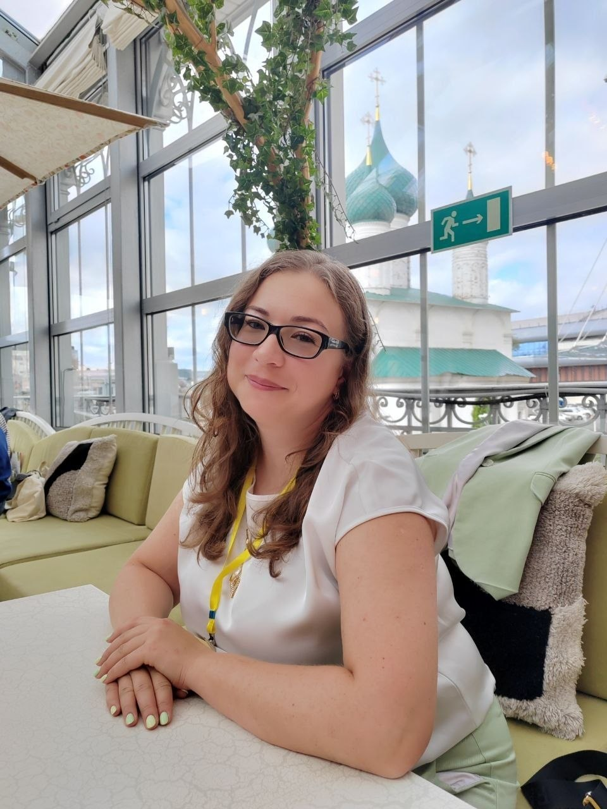
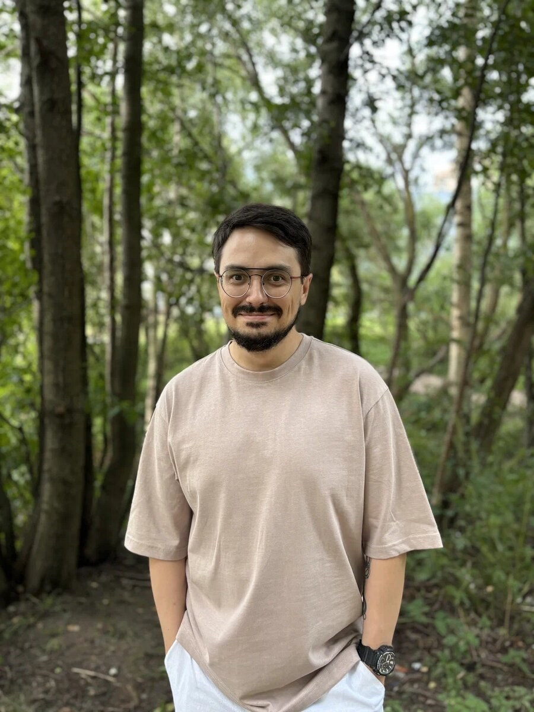
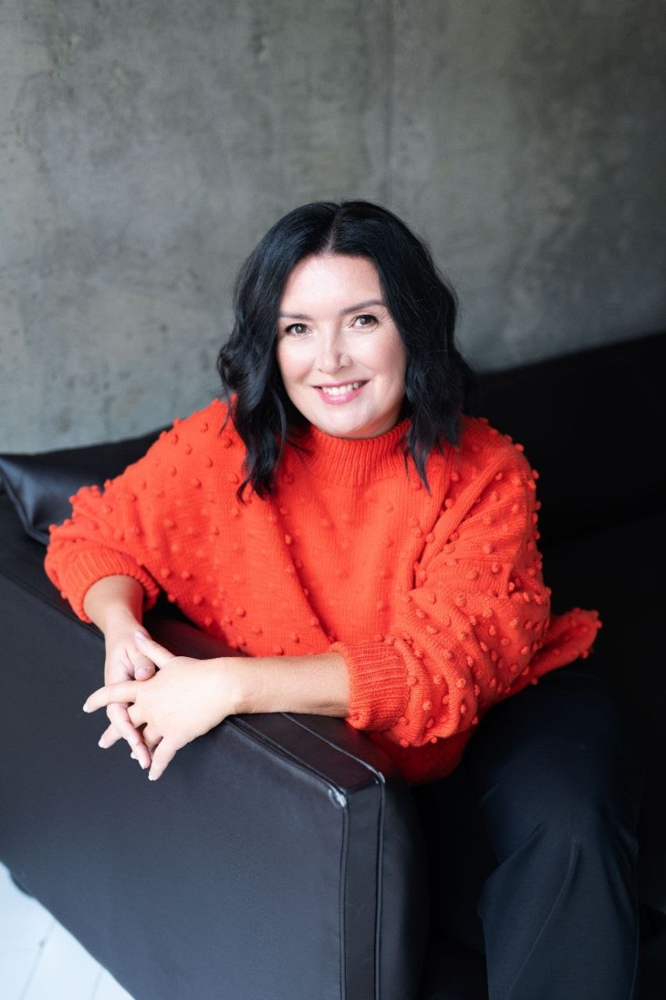
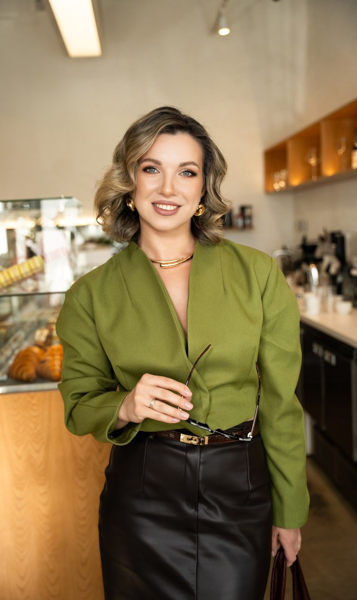
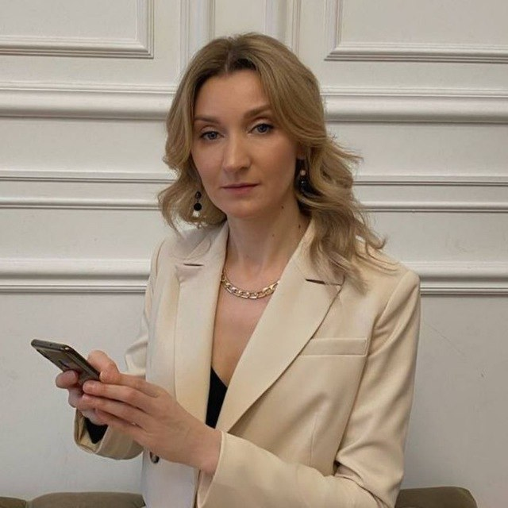

ПРЕПОДАВАНИЕ
Уроки, методика, материалы, AI.
Практические решения, которые можно забрать в свою работу уже на следующий день.
методика / практика / инструментыОдин день для идей, которые хочется забрать с собой
Study · Practice · Achieve · Reinforce · Kindle
Методика, блогинг, AI, материалы, проекты и люди, с которыми хочется делать следующий шаг.
Регистрация скоро↗
01 · О конференции
S.P.A.R.K. — офлайн-встреча для преподавателей, методистов, образовательных блогеров и авторов проектов. В центре — практика, идеи, профессиональные связи и разговоры, которые продолжаются после последнего выступления.
Мы собираем программу так, чтобы с неё можно было унести не только вдохновение, но и конкретный следующий шаг.
02 · Направления
Две профессиональные линии, которые всё чаще пересекаются в работе современного преподавателя.
ПРЕПОДАВАНИЕ
Практические решения, которые можно забрать в свою работу уже на следующий день.
методика / практика / инструментыБЛОГИНГ
Как говорить о своей экспертизе, собирать вокруг неё людей и развивать собственные проекты.
контент / бренд / сообщество03 · Что останется с вами
Приходите за идеями.
Уходите с тем, что можно применить.
04 · Спикеры
Практики, методисты и эксперты в преподавании, экзаменах, образовательных проектах, блогинге, AI и юридической стороне работы преподавателя.
Преподаватель английского языка с 25-летним опытом, методист, тренер преподавателей, основатель онлайн-школы и методического центра, спикер профессиональных конференций и автор книги «Легко учить(ся)».
Более 5000 преподавателей прошли авторские курсы Татьяны и применяют полученные знания в своей работе. Её профессиональная экспертиза — создание комфортной и эффективной образовательной среды онлайн и офлайн и разработка решений, которые делают обучение и работу преподавателя проще и эффективнее.

Преподаватель английского языка для взрослых A2–B2 с 17-летним опытом, сертификат TKT Modules 1–3.
Спикер профессиональных конференций. Консультирует преподавателей по организации повторения и рециркуляции, работе в лексическом подходе и с аутентичными материалами. Ведёт блог о преподавании и делится практическими идеями со своих уроков.

Эксперт ЕГЭ и ОГЭ, член предметной комиссии в Москве с 2016 года, практикующий учитель и руководитель методического объединения иностранных языков в гимназии.
Работает в государственных школах с 2010 года, включая Университетскую гимназию МГУ. Соавтор курсов по подготовке к ЕГЭ для учителей и учащихся, приглашённый эксперт вебинаров Рособрнадзора. 90% её учащихся сдали ЕГЭ на 86+ баллов. CAE (A), CPE (A).

Сертифицированный Cambridge преподаватель английского языка и тренер преподавателей с более чем 15-летним опытом.
Автор более 10 методических курсов, блогер и ведущий подкаста «Душный методист». Специализируется на практичных и легко применимых методических рекомендациях для обучения взрослых учеников.

Преподаёт английский преподавателям английского в онлайн-группах и ведёт дискуссионный клуб по фильмам Cinemagic.
Сертификаты DELTA M1, IH-CAM, CELTA, CPE, IELTS, TOEFL, GRE. Активно участвует в языковых и методических проектах коллег и считает постоянное профессиональное развитие важной частью работы преподавателя.

Член Ассоциации юристов России, основатель юридического агентства «ЧЕК-ЛИСТ», юрист образовательных проектов, онлайн-школ, репетиторов и педагогов.
Спикер, преподаватель и наставник для юристов. Помогает образовательным проектам выстраивать юридическую сторону работы, снижать риски финансовых потерь и возвратов и избегать правовых ошибок.

Эксперт по продвижению преподавателей в социальных сетях.
Автор 6 обучающих программ для преподавателей и 16+ запусков собственных продуктов. Более 200 преподавателей прошли её платные программы и проекты за последний учебный год. За 2 года увеличила доход от работы через Telegram в 20 раз.
Методист, преподаватель английского языка и эксперт по применению искусственного интеллекта в образовании, магистр НИУ ВШЭ.
Специализируется на разработке учебных материалов и интеграции AI-инструментов в работу преподавателя. Автор канала @freshteacher и образовательных продуктов, которые помогают преподавателям создавать методически сильные материалы с помощью нейросетей.
05 · Билеты
Продажа билетов откроется позже. Следите за анонсами конференции, чтобы не пропустить старт регистрации.
06 · Место проведения
S.P.A.R.K. пройдёт в Басманном районе Москвы, рядом с метро «Бауманская».
Москва · м. Бауманская
7 НОЯБРЯ 2026 · МОСКВА